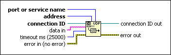
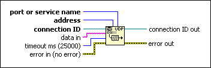

UDP Write Function
Owning Palette: UDP VI and Functions
Requires: Base Development System
Writes to a remote UDP socket.

 Add to the block diagram Add to the block diagram |
 Find on the palette Find on the palette |
Owning Palette: UDP VI and Functions
Requires: Base Development System
Writes to a remote UDP socket.

| Add to the block diagram |
Find on the palette |
 |
port or service name can accept a numeric or string input. port or service name identifies what port to write to. If you specify a service name, LabVIEW queries the NI Service Locator for the port number that the server registered. |
 |
address is the address of the computer where you want to send a datagram. |
 |
connection ID is a network connection refnum that uniquely identifies the UDP socket. |
 |
data in contains the data to write to another UDP socket. In an Ethernet environment, restrict data to 8192 bytes. In a LocalTalk environment, restrict data to 1458 bytes to maintain gateway performance. |
 |
timeout ms specifies the time, in milliseconds, that the function waits before the function completes and returns an error. The default value is 25,000 ms or 25 seconds. A value of -1 indicates to wait indefinitely. |
 |
error in describes error conditions that occur before this node runs. This input provides standard error in functionality. |
 |
connection ID out returns the same value as connection ID. |
 |
error out contains error information. This output provides standard error out functionality. |
Refer to the following VIs for examples of using the UDP Write function:
 Open example Find related examples
Open example Find related examples
Open example Find related examples
Open example Find related examples